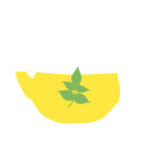
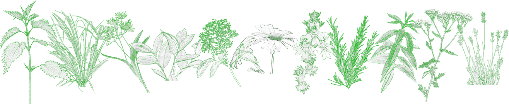
天然のもつ豊かな香りと色で味覚だけでなく嗅覚や視覚でも楽しむことができるハーブティ。
種類も豊富で、様々な効能や特長がありますが、一般的にはあまり知られていません。
少しでもその魅力に気づいた方なら、気分や症状に合わせた自分好みのティを
探していることでしょう。本サイトはそんな方への手助けができるようにと、
主要20のシングルハーブの特長とおすすめブレンドティを紹介しています。
 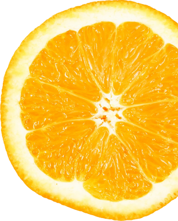
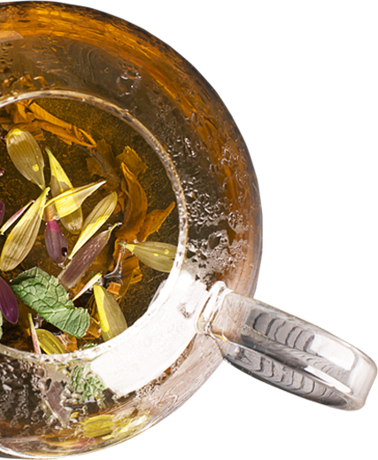
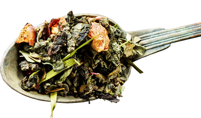
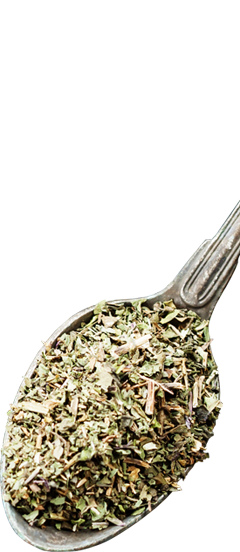
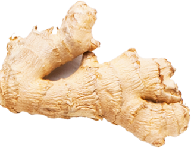
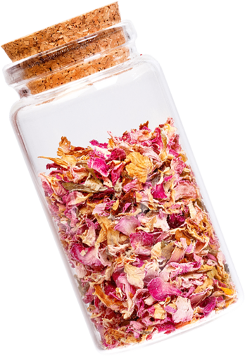
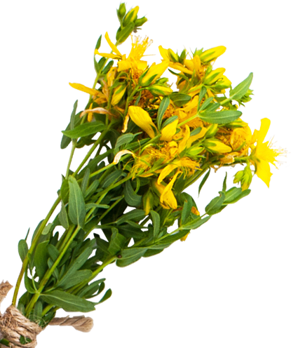
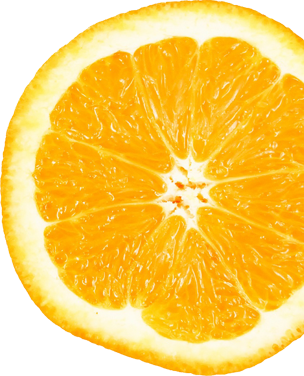
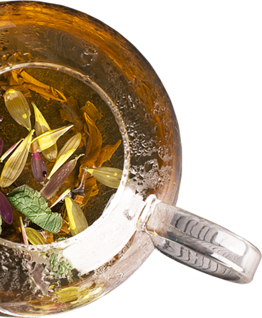
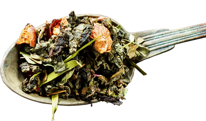
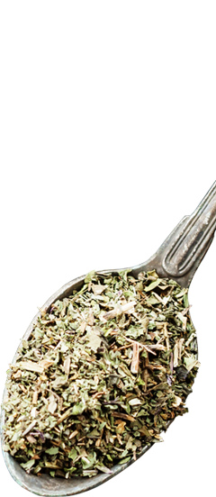
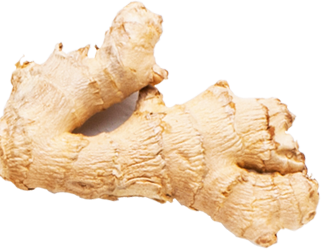
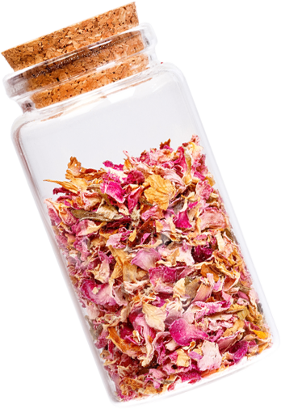
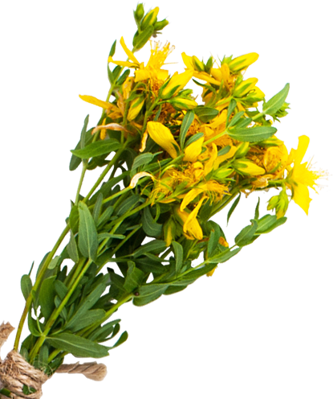
ティーポット1杯分に対してドライハーブはティースプーン
山盛り１杯が目安です
沸騰したお湯をを150～180cc、円を描くようにゆっくりと注ぎます。
蓋をして3分～5分蒸らします。通常の抽出は3分が目安です。花びらが入っているものは短めに、実や根などがある場合は、
5分と長めに抽出します。
ティーポットを平行に揺らしてから茶こしを使ってカップへ
注ぎます。
ハーブティの中には、妊娠中に避けたほうがよいものや、
アレルギー体質や病状のある人などには向かない種類のものもあります。
健康のために使用したいと考えている方は、
飲みたいハーブティのことをよく調べてから飲むとよいでしょう。
必ずしも病状を治すために使うのではなく、
和らげる役割をするものとして飲用しましょう。
ハーブティを購入したら、保存方法にも気をつけましょう。
直射日光、高温多湿を避けて保存することが大切です。
袋や瓶などを用意して乾燥材と一緒に冷暗所に保管します。
自宅では冷蔵庫や戸棚などがよいでしょう。
一度開封したものは早めに使いきり、 賞味期限に注意して保管しましょう。